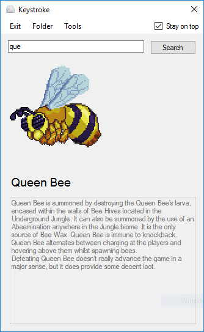

Keystroke is pretty much a tiny wiki client.
You can download or create "libraries", which are... pretty much tiny wikis.
Keystroke makes searching for info for example in the middle of a game much easier.
You don't have to navigate to the game's wiki anymore, just alt-tab to Keystroke and
search for something!
Download the library you want and place it in your "pages" folder. Make sure that the main .txt file is not in the main folder.
Open Keystroke. You'll be asked to load a library. Press the Load button and navigate to the main .txt file.
All done!